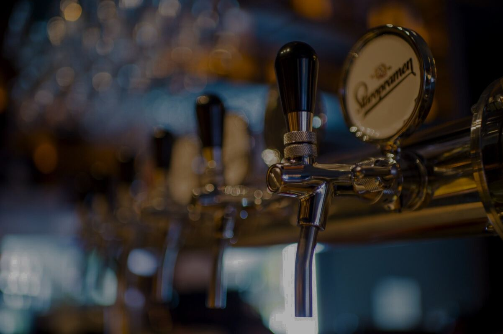
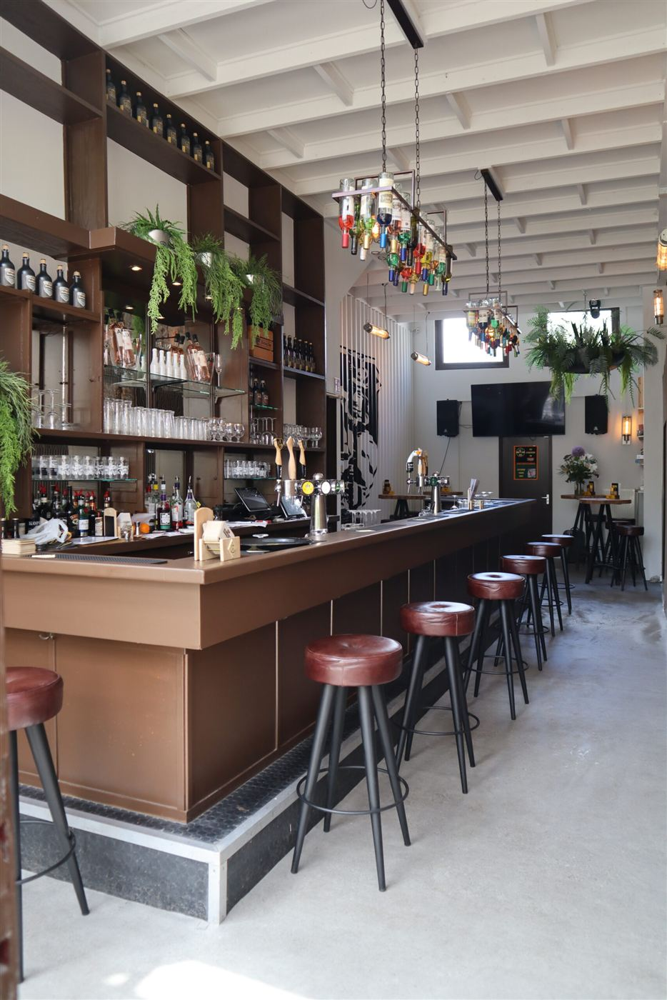
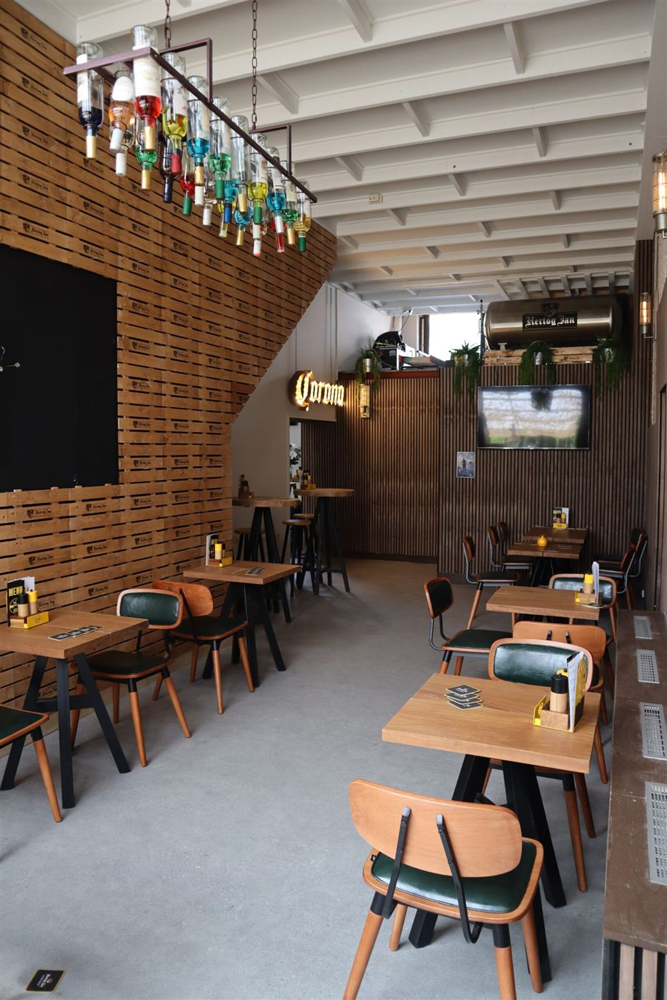
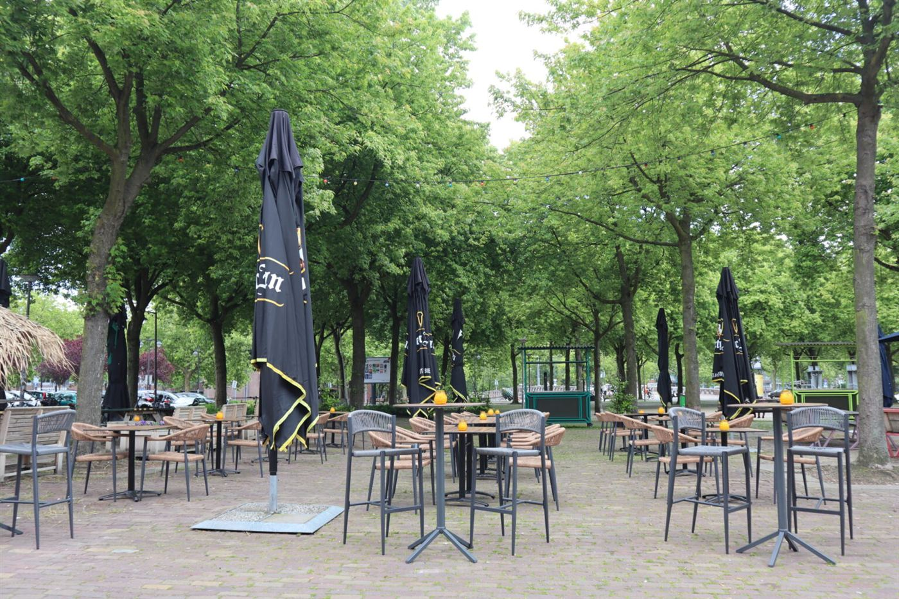
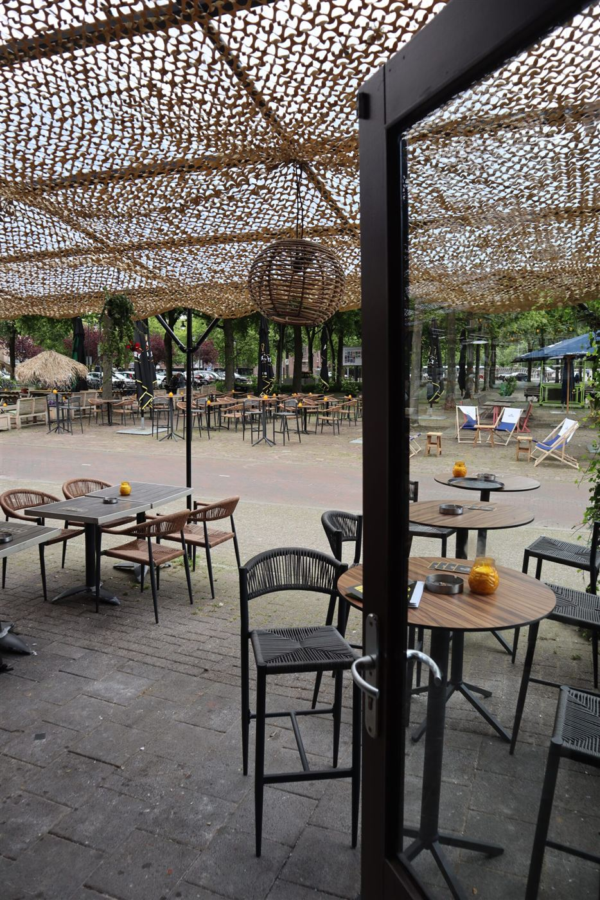
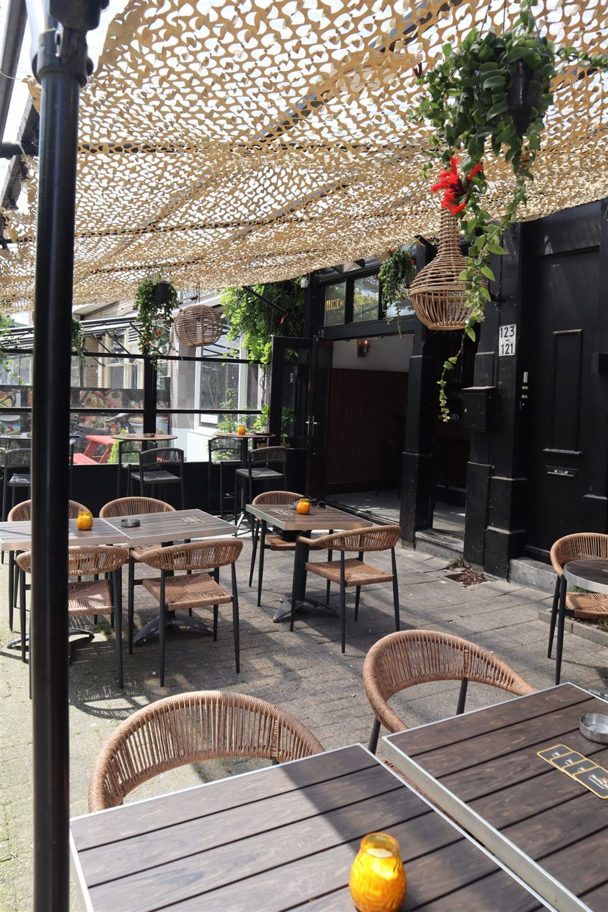
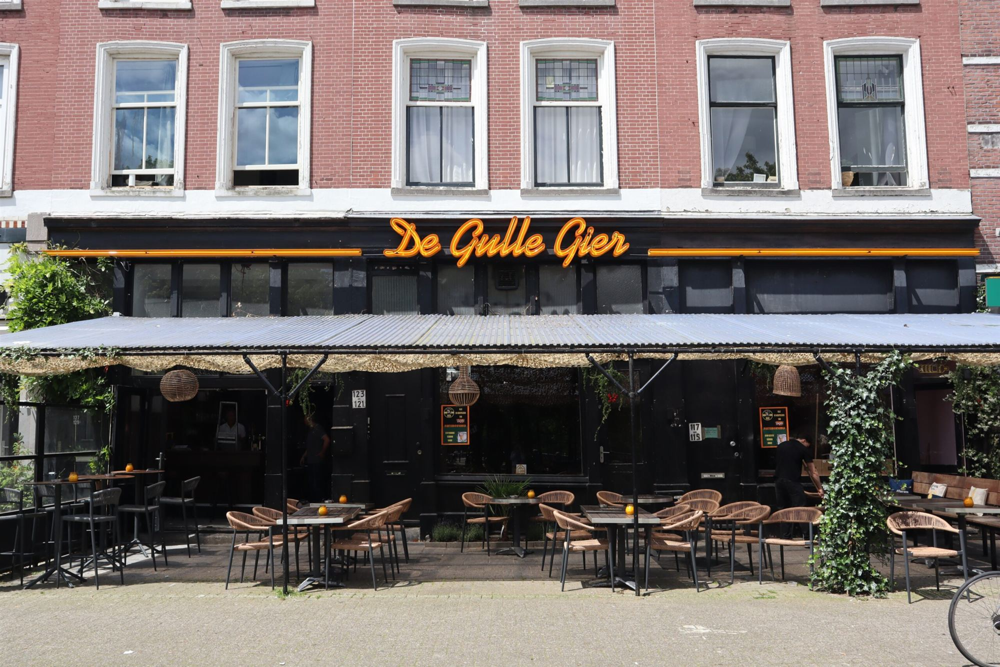
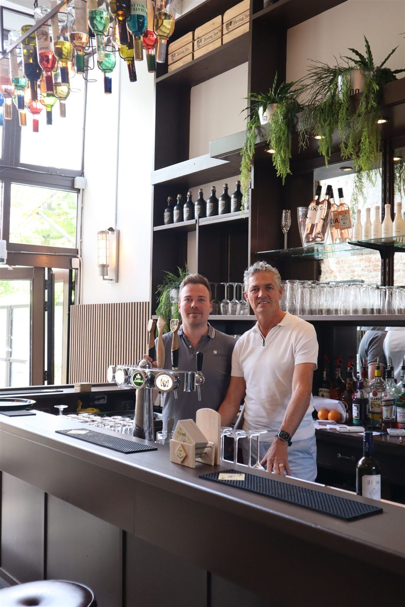
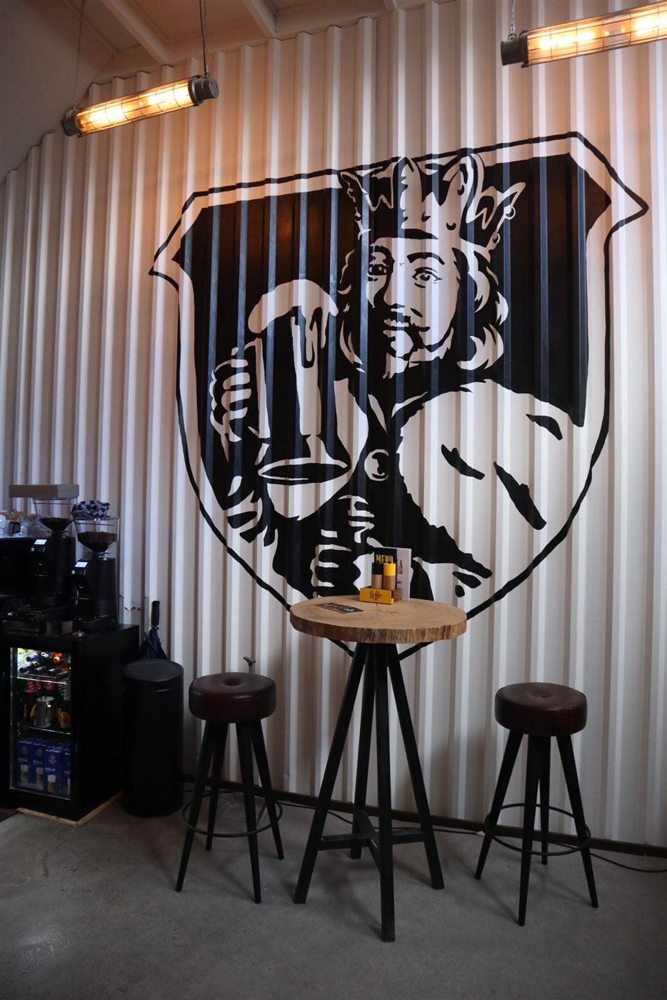

Een gezellige plek aan het Noordplein
Een biertje van de tap, een goede lunch of gewoon even zitten. Binnen aan de bar of buiten op het terras, midden in Rotterdam Noord.
Drankjes, hapjes en een plek voor iedereen
Bij Café De Gulle Gier kun je genieten van een breed scala aan drankjes en smakelijke hapjes. Het menu is zorgvuldig samengesteld om voor elk wat wils te bieden. Van een verfrissend biertje tot een smaakvolle wijn, en van lichte snacks tot uitgebreide borrelplanken: hier vind je het allemaal.
De Gulle Gier is niet alleen een populaire plek voor dagelijks bezoek, maar ook een geliefde locatie voor lokale evenementen. Regelmatig worden er speciale avonden georganiseerd, van live muziek tot gezellige quizavonden. Een ontmoetingsplek voor locals én bezoekers van de stad.

Hertog Jan van de tap. Mooie en bijzondere bieren, allemaal met een heel eigen smaak, zoals alleen de brouwers van Hertog Jan ze kunnen brouwen.


Elke maandag een ander eetthema
Geserveerd met salade en patat.
- 1e maandagBurgeravond15,-
- 2e maandagSchnitzelavond15,-
- 3e maandagSpareribsavond15,-
- 4e maandagSaté- / hete kipavond13,-
- 5e maandagRibeyeavond15,-
Agenda november
Live muziek, een zeetongavond en Sinterklaas. Samen met zusterzaak Café Postiljon, ook aan het Noordplein.
Winterterras
Elke zaterdag vanaf 14 november: glühwein, erwtensoep, poffertjes en meer.
- The Containers21:00 uur, Café Postiljon
- ZeetongavondDe Gulle Gier, opgeven aan de bar
- Old Spice16:00 uur, Café Postiljon
- Sinterklaas op bezoek14:00 uur
- Fountain21:00 uur, De Gulle Gier
Terras op het Noordplein
Café De Gulle Gier aan het Noordplein is dé plek voor een drankje en een hapje, binnen en buiten op het terras. Onder de bomen op het plein, of beschut onder het doek tegen de gevel. Kom langs en ervaar het zelf!





Vader en zoon aan het Noordplein
Het café wordt met passie gerund door Rory Bergwerf. Rory's inzet en enthousiasme zorgen voor een warme en gastvrije sfeer, waar iedereen zich thuis voelt. Zijn ervaring en toewijding merk je in elke hoek van het café en in de kwaliteit van de service.
Zijn vader Ron Bergwerf is sinds 1985 de trotse eigenaar van Café Postiljon, al jaren een begrip in Rotterdam Noord. Sinds kort runnen ze samen ook De Gulle Gier. Samen zorgen ze ervoor dat elke gast zich welkom voelt.
Wat beide cafés gemeen hebben: een warme, gezellige sfeer die je bij binnenkomst meteen omarmt, klassieke charme en zachte verlichting. Of je nu alleen komt of met vrienden, je voelt je hier direct thuis.
Op Google beoordeeld als “uitstekend”, op basis van 30 recensies.
Feesten & partijen
Heb je iets te vieren? Doe het bij Café De Gulle Gier. Een verjaardag, een borrel met collega's of een feest met familie: het is ook mogelijk om het café af te huren.
Vul het formulier in, dan nemen we binnen 24 uur contact met je op om samen je wensen te bespreken. Liever direct? Bel of app 06 39 38 58 42.

Kom langs
Noordplein 119-1253035 EC Rotterdam
06 39 38 58 42
info@cafedegullegier.nl
Openingstijden
| Maandag | 12:00 – 24:00 |
|---|---|
| Dinsdag | gesloten |
| Woensdag | gesloten |
| Donderdag | 14:00 – 24:00 |
| Vrijdag | 14:00 – 01:00 |
| Zaterdag | 12:00 – 01:00 |
| Zondag | 14:00 – 24:00 |
Twijfel je of we open zijn? Bel of app gerust even.